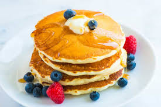

Pancakes

Description
Fluffy pancakes are a breakfast favorite, and with this easy recipe, you can make them from scratch in no time. Perfectly golden and light, these pancakes are sure to become a staple in your morning routine.
Ingredients
- 1 cup all-purpose flour
- 2 tablespoons sugar
- 1 teaspoon baking powder
- 1/2 teaspoon baking soda
- 1/4 teaspoon salt
- 3/4 cup buttermilk
- 1/4 cup milk
- 1 large egg
- 2 tablespoons melted butter, plus more for cooking
- 1 teaspoon vanilla extract
Steps
- In a large bowl, whisk together the flour, sugar, baking powder, baking soda, and salt.
- In another bowl, whisk together the buttermilk, milk, egg, melted butter, and vanilla extract until well combined.
- Pour the wet ingredients into the dry ingredients and stir until just combined. Be careful not to overmix; a few lumps are okay.
- Heat a non-stick skillet or griddle over medium heat and lightly grease it with butter.
- Pour 1/4 cup of batter onto the skillet for each pancake. Cook until bubbles form on the surface and the edges look set, about 2-3 minutes.
- Flip the pancakes and cook for another 1-2 minutes until golden brown and cooked through.
- Remove from the skillet and keep warm. Repeat with the remaining batter, greasing the skillet as needed.
- Serve the pancakes warm with your favorite toppings such as maple syrup, fresh berries, or whipped cream.